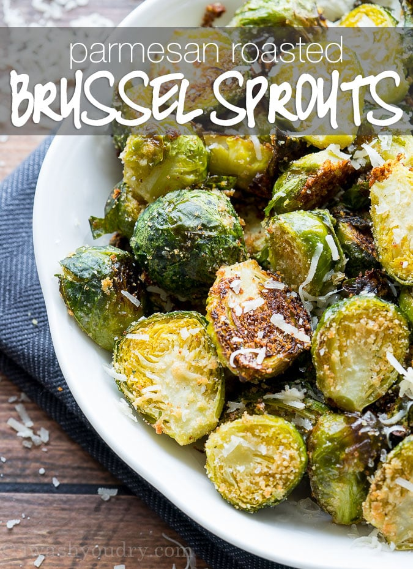

Parmesan Roasted Brussel Sprouts

Description
This is a family favorite recipe. So much so, in fact, I am a bit tired of making and eating it.
Ingredients
- 1 1/2 pounds brussels sprouts, fresh, trimmed and halved
- 2 tbsp olive oil
- 1/4 cup breadcrumbs
- 1/2 cup parmesan cheese, shredded
- 1 tsp garlic powder
- 1/2 tsp salt
- 1/4 tsp black pepper
Steps
- Preheat oven to 425 degrees F. Lightly grease a baking sheet with non-stick spray and set aside.
- Combine brussels sprouts and olive oil in a large zip close bag and shake to coat. Add the breadcrumbs, parmesan cheese, garlic powder, salt and pepper to the bag and shake to coat.
- Spread in an even layer on the baking sheet and bake for 15 to 17 minutes until the cheese is melted and the brussels sprouts are lightly browned.
Home